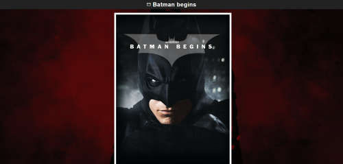
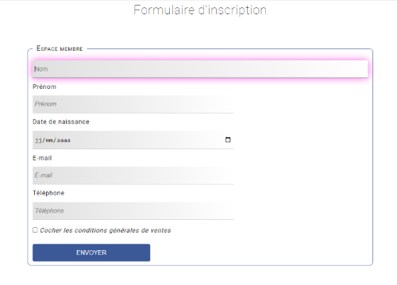
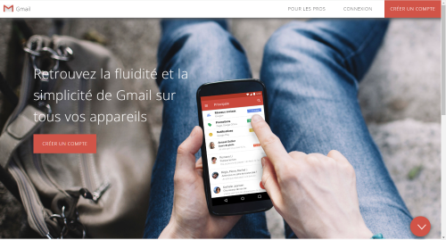

Refont-design
Réalisation d'une page web à partir d'un code fourni contenant des erreurs à corriger.
La charte graphique est composée de ces cinq couleurs :
La charte typographique :
Roboto sans-serif 16px;
Lien vers le github du projet

Batman Begins
Réalisation d'une page web pour présenter le film Batman Begins. L'objectif de ce projet était d'apprendre l'utilisation des
langages HTML5 et CSS3, ainsi que l'utilisation des listes et des nth-child pour alterner un effet.
La charte graphique est composée de ces cinq couleurs :
La charte typographique :
Monserrat sans-serif 16px;
Lien vers le github du projet 
Formulaire
Réalisation d'une page web pour créer un formulaire d'inscription. L'objectif de ce projet était d'apprendre à utiliser les
balises form.
La charte graphique est composée de ces quatre couleurs :
La charte typographique :
Roboto sans-serif 16px;
Lien vers le github du projet 
Fake Gmail
Réalisation d'une page web ressemblant à Gmail. L'objectif de ce projet était de mettre en application tout ce que j'ai appris
au cours de ces deux années de formation. Le site est connecté à une base de données, cela permet de mettre en place des
contrôles de champs, remplir une base de données et en extraire des informations.
La charte graphique est composée de ces trois couleurs :
La charte typographique :
Open-Sans sans-serif 16px;
Lien vers le github du projet 